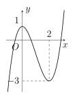
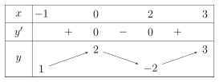
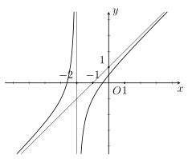
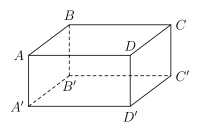

Phần I. Thí sinh trả lời từ câu 1 đến câu 12, mỗi câu hỏi chọn một phương án.
Câu 1
Cho hàm số bậc ba y=f(x) có đồ thị như hình vẽ dưới. Điểm cực tiểu của đồ thị hàm số đã cho là

A.N(2;–3).
B.M(0;1).
C.x=2.
D.x=0.
Câu 2
Giả sử giá trị nhỏ nhất của hàm số y=x+e−2x trên đoạn [0;2] là a+lnb. Tính ab.
A.ab=22.
B.ab=21.
C.ab=1.
D.ab=2.
Câu 3
Tính giới hạn x→(–1)−limx+1x−2.
A.+∞.
B.−21.
C.−∞.
D. 1.
Câu 4
Cho hàm số y=f(x) liên tục trên đoạn [−1;3] và có bảng biến thiên như sau:

Tìm giá trị nhỏ nhất của hàm số đã cho trên đoạn [−1;3].
A. 2.
B. 3.
C. –2.
D. 1.
Câu 5
Cho hàm số y=f(x) có đạo hàm f′(x)=3x2(x−1)3(x+2)2,∀x∈R. Số điểm cực trị của hàm số đã cho là
A. 2.
B. 1.
C. 4.
D. 3.
Câu 6
Cho hàm số y=cx+2ax2+bx+1 có đồ thị như hình vẽ bên dưới. Tính giá trị biểu thức T=2a+3b−c.

A. 8.
B. 10.
C. 9.
D. 11.
Câu 7
Cho hình hộp chữ nhật ABCD.A′B′C′D′ có AB=4a,AD=3a,AA′=2a (tham khảo hình vẽ bên dưới). Gọi φ là số đo góc nhị diện [B,A′C′,D]. Tính tanφ.

A.−1160.
B.1160.
C.−940.
D.940.
Câu 8
Hai xạ thủ độc lập bắn vào một mục tiêu. Xác suất trúng mục tiêu của xạ thủ thứ nhất là 0,75. Xác suất trúng mục tiêu của xạ thủ thứ hai là 0,85. Xác suất để mục tiêu bị bắn trúng là
A.4013.
B.8077.
C.53.
D.8051.
Câu 9
Kết quả khảo sát cân nặng của 25 quả bơ được cho trong bảng sau
Cân nặng (gam)
[150;155)
[155;160)
[160;165)
[165;170)
[170;175)
[175;180)
Số quả
2
4
7
8
3
1
Tứ phân vị thứ ba (đơn vị: gam, kết quả làm tròn đến hàng phần chục) của mẫu số liệu trên bằng
A.Q3=164,6.
B.Q3=168,6.
C.Q3=169,8.
D.Q3=160,2.
Câu 10
Tập nghiệm T của bất phương trình log31(x+4)⩾−2 là
A.T=(–4;5].
B.T=(–4;5).
C.T=[5;+∞).
D.T=(−∞;5].
Câu 11
Cho cấp số cộng (un) có số hạng đầu u1=–2, công sai d=3. Hỏi 199 là số hạng thứ mấy của cấp số cộng đã cho?
A. 66.
B. 67.
C. 68.
D. 69.
Câu 12
Một nhà máy dự định sản xuất không quá 200 sản phẩm trong mỗi tháng. Biết giá bán của mỗi sản phẩm được tính theo hàm số p(x)=334−23x (nghìn đồng), trong đó x là số lượng sản phẩm sản xuất trong tháng. Hỏi mỗi tháng nhà máy đạt được doanh thu lớn nhất là bao nhiêu nghìn đồng (giả sử rằng các sản phẩm mà nhà máy sản xuất ra đều bán hết)?
A. 18592.
B. 18593.
C.18592,7.
D.18592,5.
Phần II. Thí sinh trả lời từ câu 1 đến câu 4, trong ý a), b), c), d) ở mỗi câu câu, thí sinh chọn ĐÚNG hoặc SAI.
Câu 1
Một công ty sau khi ra mắt sản phẩm mới đã ghi nhận lợi nhuận P(t) (đơn vị: tỷ đồng) sau t tháng kinh doanh. Trong năm đầu tiên, giả sử mối liên hệ giữa lợi nhuận và thời gian kinh doanh được mô hình hóa bởi hàm số:
P(t)=−t3+12t2+60t−50,0⩽t⩽12.
A. Lợi nhuận của công ty tại thời điểm t=2 là 110 tỷ đồng.
B. Hàm số biểu thị tốc độ tăng trưởng lợi nhuận P′(t)=–3t2+24t+10.
C. Lợi nhuận của công ty đạt mức tối đa tại thời điểm t=10.
D. Tại thời điểm t=4 thì tốc độ tăng trưởng lợi nhuận là lớn nhất.
Câu 2
Cho hàm số f(x)=log2(x2−4x+8).
A. Tập xác định của hàm số f(x) là D=R.
B. Đạo hàm f′(x)=x2−4x+82x−4.
C. Giá trị nhỏ nhất của hàm số f(x) trên R bằng 1.
D. Phương trình f(x)=2025 có đúng hai nghiệm.
Câu 3
Cho hàm số y=x−12x2−x+2 có đồ thị (C).
A. Tập xác định của hàm số đã cho là D=(1;+∞).
B. Hàm số đã cho có đúng hai điểm cực trị.
C. Đồ thị (C) có tiệm cận xiên là y=2x+1.
D. Xét điểm A thuộc (C), tổng khoảng cách từ A đến hai đường tiệm cận của (C) luôn lớn hơn 2,3.
Câu 4
Cho hàm số y=(9−x2)31+ln(1−x)
A. Tập xác định của hàm số là khoảng (−∞;1).
B. Hàm số có đạo hàm y′=33(9−x2)21−1−x1.
C. Hàm số nghịch biến trên khoảng (0;1).
D. Giá trị nhỏ nhất của hàm số trên đoạn [41;21] bằng 21370−ln(2).
Phần III. Thí sinh trả lời từ câu 1 đến câu 6 (không làm tròn các phép tính trung gian trong các câu từ 1 đến câu 6).
Câu 1
Một chất điểm chuyển động có phương trình chuyển động là s(t)=−21t2+20t (đơn vị: mét), với t⩾0 (đơn vị: giây). Sau 8 giây tính từ khi chất điểm bắt đầu chuyển động, vận tốc tức thời của chất điểm bằng bao nhiêu mét/giây?
Câu 2
Một nhà máy sản xuất và bán x sản phẩm trong mỗi tháng. Chi phí sản xuất x sản phẩm được cho bởi công thức C=10000+600x−0,6x2+0,004x3 (nghìn đồng). Biết giá bán của mỗi sản phẩm là p=1800−6x (nghìn đồng). Hỏi mỗi tháng nhà máy nên sản xuất bao nhiêu sản phẩm để lợi nhuận thu được là lớn nhất?
Câu 3
Trong công nghệ sinh học sản xuất vắc-xin, sự phát triển số lượng vi khuẩn nuôi cấy trong môi trường dinh dưỡng giới hạn được mô hình hóa bởi hàm số Logistic N(t)=1+Be−ktA (trong đó N(t) là số lượng vi khuẩn (đơn vị: triệu con) sau t giờ nuôi cấy (t⩾0) và A,B,k là các hằng số dương). Tốc độ sinh trưởng của quần thể tại thời điểm t được xác định bởi hàm v(t)=N′(t) (đơn vị: triệu con/giờ). Biết rằng: Số lượng vi khuẩn tối đa mà môi trường này có thể duy trì khi thời gian nuôi cấy đủ lớn (xem số lượng này bằng t→+∞limN(t)) là 500 triệu con; Tại thời điểm ban đầu (t=0) quần thể có 20 triệu con; Sau 2 giờ nuôi cấy, số lượng vi khuẩn đạt 100 triệu con. Người nuôi cấy cần can thiệp thu hoạch sinh khối tại thời điểm tốc độ sinh trưởng v(t) đạt giá trị cực đại vmax. Hãy tính tốc độ sinh trưởng cực đại vmax (triệu con/giờ) (không làm tròn các kết quả trung gian, làm tròn kết quả sau cùng đến hàng đơn vị).
Câu 4
Xét A và B là hai biến cố của một phép thử. Biết rằng xác suất của các biến cố A,B,A∩B lần lượt là P(A)=0,7;P(B)=0,6 và P(A∩B)=0,1. Hỏi xác suất của biến cố A∪B bằng bao nhiêu?
Câu 5
Cho hình chóp S.ABCD có đáy ABCD là hình chữ nhật, AB=a,AD=2a; cạnh bên SA vuông góc với mặt phẳng đáy và SA=2a. Gọi α là số đo của góc nhị diện [S,BD,C]. Hỏi cosα bằng bao nhiêu?
Câu 6
Tổng của tất cả các nghiệm của phương trình 2log2(x+5)+log2x2=2log26 bằng bao nhiêu?